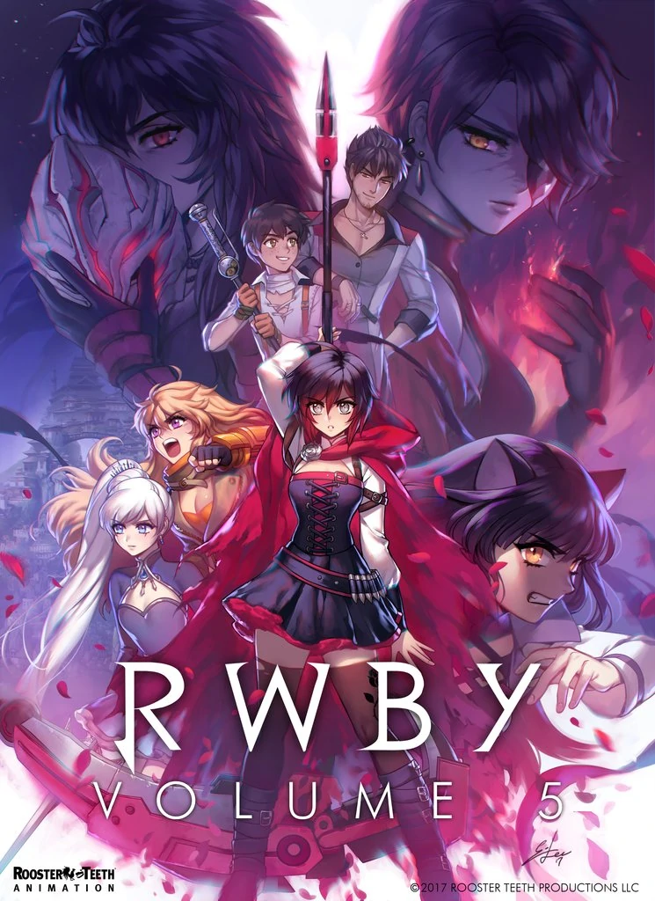
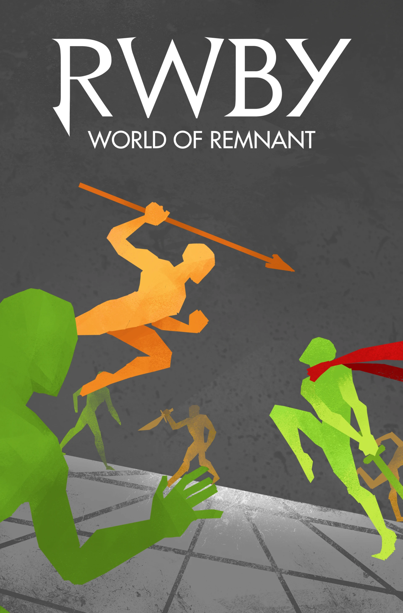

Főoldal
Projektek
Csapattagok
Infók
SkelyXD Subs
Projektek
RWBY (5. évad)
RWBY: World of Remnant
?????


Fordító: CsontiXD
Fordító: CsontiXD
Fordító: CsontiXD
Lektor: Yeet the meat, Mary
Lektor: Yeet the meat, Mary
Lektor: Yeet the meat, Mary
Részek: 4/14
Részek: 1/16
Részek: ?/?